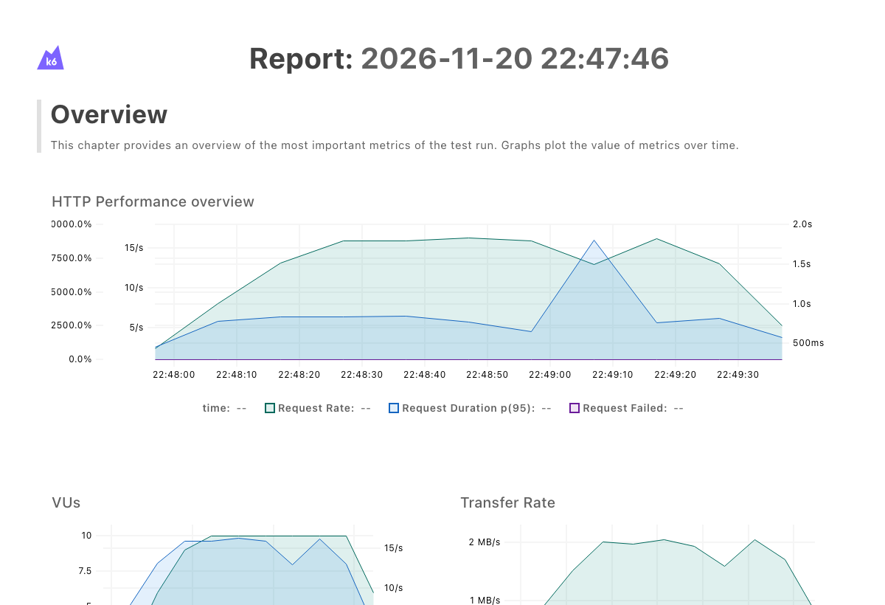

El sistema evaluado es una aplicación financiero-contable de una clínica, que gestiona pacientes, facturación, caja y contabilidad. Está organizada en módulos (RRHH, Contabilidad, Administración/Caja y Reportes) accesibles mediante index.php?opcion=<...>.
| Capa | Tecnología |
|---|---|
| Servidor web | Apache 2.4.62 (AlmaLinux) |
| Lenguaje | PHP 7.4.33 (renderizado del lado del servidor) |
| Front-end | HTML + jQuery / Bootstrap Material Dashboard, llamadas AJAX |
| Sesión | Cookie PHPSESSID (login por formulario session.php) |
Se seleccionó la generación de comprobantes contables (traspaso) dentro del módulo de Contabilidad, por ser una transacción de escritura representativa que ejercita autenticación, renderizado de formularios complejos y persistencia contable (asientos Debe/Haber).
| Métrica | Objetivo (SLA) |
|---|---|
| Tiempo de respuesta P95 (http_req_duration) | < 1500 ms |
| Tiempo de respuesta P99 | < 2500 ms |
| Tasa de errores (http_req_failed) | < 1% |
| Aserciones correctas (checks) | > 99% |
| # | Paso | Petición |
|---|---|---|
| 1 | Autenticación | POST session.php → cookie PHPSESSID |
| 2 | Entrar a Contabilidad | GET modulo.php?codigo=3 |
| 3 | Abrir registro de comprobante | GET comprobantes/register.php |
| 4 | Emitir comprobante (traspaso) | POST comprobantes/save.php |
| Prueba | Objetivo | Perfil (VUs / duración) |
|---|---|---|
| Smoke | Verificar el flujo y las correlaciones | 1 VU, pocas iteraciones |
| Carga sostenida | Validar SLAs bajo carga nominal | 0→10→10→0 VUs (~1m50s) |
| Spike | Respuesta ante pico súbito | 5→100→5 VUs (~75s) |
| Estrés | Hallar el punto de quiebre | 50→150→300→0 VUs (~5.5m) |
La corrida analizada en este informe corresponde a la carga sostenida (10 VUs). Las pruebas de spike y estrés incrementan la carga sobre un servidor compartido y deben ejecutarse coordinadas con el equipo.
trabajo-final/ ├── config/config.js # BASE_URL, credenciales, thresholds (SLAs), flags ├── data/ │ ├── movimientos.json # datos externos (traspasos: Debe/Haber/monto) │ └── movimientos.js # SharedArray (parametrización) ├── lib/ │ ├── auth.js # login() -> sesión PHPSESSID │ ├── comprobanteContable.js # abrir registro / generar traspaso │ └── flujo.js # flujo de negocio reutilizable └── scenarios/ smoke · carga · spike · estres
Los datos de los traspasos se cargan una sola vez en memoria y se comparten entre todos los VUs, optimizando el consumo de RAM:
export const movimientos = new SharedArray('movimientos traspaso', () =>
JSON.parse(open('./movimientos.json')));
Se capturan y reutilizan tres valores que devuelve el servidor:
const m = res.body.match(/imp\.php\?comp=(\d+)/); const comprobanteId = m ? m[1] : null; // correlación del id emitido
Los check() verifican estado HTTP, contenido (formulario presente, id devuelto, sin errores de validación) y tiempo de respuesta. Los umbrales de aprobación/fallo definidos son:
thresholds: {
http_req_failed: ['rate<0.01'], // < 1% errores
http_req_duration: ['p(95)<1500', 'p(99)<2500'], // SLA de latencia
checks: ['rate>0.99'], // > 99% aserciones OK
'group_duration{group:::Generar comprobante}': ['p(95)<3000'],
}
Las métricas se visualizaron con el dashboard web integrado de k6 (de Grafana), que expone en tiempo real el RPS, la distribución de latencias (P90/P95/P99), los usuarios virtuales y la tasa de errores, y exporta un reporte HTML autocontenido:
K6_WEB_DASHBOARD=true K6_WEB_DASHBOARD_EXPORT=reportes/dashboard-carga.html \ k6 run --summary-export reportes/summary-carga.json scenarios/carga.js

| Métrica | Valor | SLA | Estado |
|---|---|---|---|
| Iteraciones completadas | 452 | — | — |
| Peticiones HTTP | 1356 (≈12.3 req/s) | — | — |
| Latencia media / mediana | 283 ms / 105 ms | — | — |
| Latencia P95 / P99 / máx | 828 ms / 1.44 s / 2.65 s | P95<1.5s · P99<2.5s | CUMPLE |
| Tasa de errores | 0.00% (0/1356) | < 1% | CUMPLE |
| Aserciones (checks) | 99.85% (2708/2712) | > 99% | CUMPLE |
| Datos recibidos | 168 MB (≈1.5 MB/s) | — | — |
Durante la meseta de carga (10 VUs) el sistema sostuvo un RPS estable de 12–16 req/s con 0% de errores. La latencia P95 se mantuvo entre 500 y 830 ms, salvo un pico aislado cercano a 1.8 s (visible hacia las 22:49 en la Figura 1 y reflejado en el máximo de login de 2.76 s). La tasa de transferencia se estabilizó en ~2 MB/s, acumulando 168 MB recibidos en menos de dos minutos — una señal temprana del peso de las páginas.
Separando el tiempo por grupo se identifica con claridad dónde se concentra la latencia:
| Transacción | Mediana | P90 | P95 | Máx |
|---|---|---|---|---|
| Login (session.php) | 197 ms | 227 ms | 256 ms | 2.76 s |
| Abrir registro (register.php) | 622 ms | 891 ms | 1071 ms | 1.79 s |
Bajo carga nominal (10 VUs) el sistema es estable y cumple todos los SLAs: 0% de errores, P95 de 828 ms (< 1.5 s) y P99 de 1.44 s (< 2.5 s), con 99.85% de aserciones correctas. El rendimiento está limitado principalmente por el peso de los formularios server-side (especialmente register.php) y no por la transacción de guardado, que respondió por debajo de 200 ms. Los picos esporádicos de login son el riesgo a confirmar en cargas mayores.
# Verificación (no genera comprobantes) k6 run scenarios/smoke.js # Carga con dashboard de Grafana + reporte HTML K6_WEB_DASHBOARD=true K6_WEB_DASHBOARD_EXPORT=reportes/dashboard-carga.html \ k6 run scenarios/carga.js # Generación real de comprobantes (crea registros) k6 run -e GENERAR=true scenarios/carga.js
Nota: la generación de comprobantes (save.php) crea registros contables reales; durante la construcción y validación del script se emitieron comprobantes de prueba etiquetados como "GRUPO 3" en el mes de septiembre.